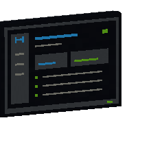

HomeLink Tasks 0.2.0
Des tableaux de tâches collaboratifs, une carte mentale et un suivi du craft réel pour organiser une base HomeLink. Chaque projet se relie à un HomeNetwork et se partage entre les membres ; l’écran de tâches rend le tableau consultable en jeu.
Rôle#
Tasks ajoute une couche d’organisation à l’écosystème : des projets contenant des tableaux (colonnes de cartes à faire / en cours / terminées), une carte mentale pour relier les idées, et des priorités (Basse, Normale, Haute, Urgente). Les projets se relient à un HomeNetwork via HomeCore : les membres partagent le même tableau et voient l’avancement.
Projets et tableaux#
| Vue | Usage |
|---|---|
| Projets | Lister, créer et rechercher les projets ; relier ou détacher un HomeNetwork. |
| Tableau | Colonnes de cartes de tâches avec assignations, priorité et quantité cible. |
| Carte mentale | Relier visuellement les cartes ; recentrer et naviguer librement. |
Suivi du craft#
Une carte peut viser une quantité d’objets réellement fabriqués, pas des clics, des opérations ni des prototypes. L’avancement s’affiche « X sur Y fabriqués ». Avec HomeLink Storage installé (intégration optionnelle), le suivi s’appuie sur les inventaires réels du réseau.
Recette#
L’écran de tâches se fabrique à la table vanilla. C’est le bloc qui rend un projet consultable en jeu (trois tailles d’affichage partagent la même recette de base).
Icônes : rendu 3D des blocs, comme dans l’inventaire ; les objets (lingots, composants…) gardent leur texture réelle.

Galerie#
Captures en jeu. Cliquer pour agrandir.